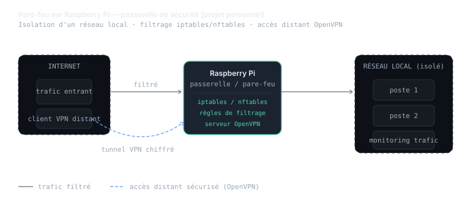
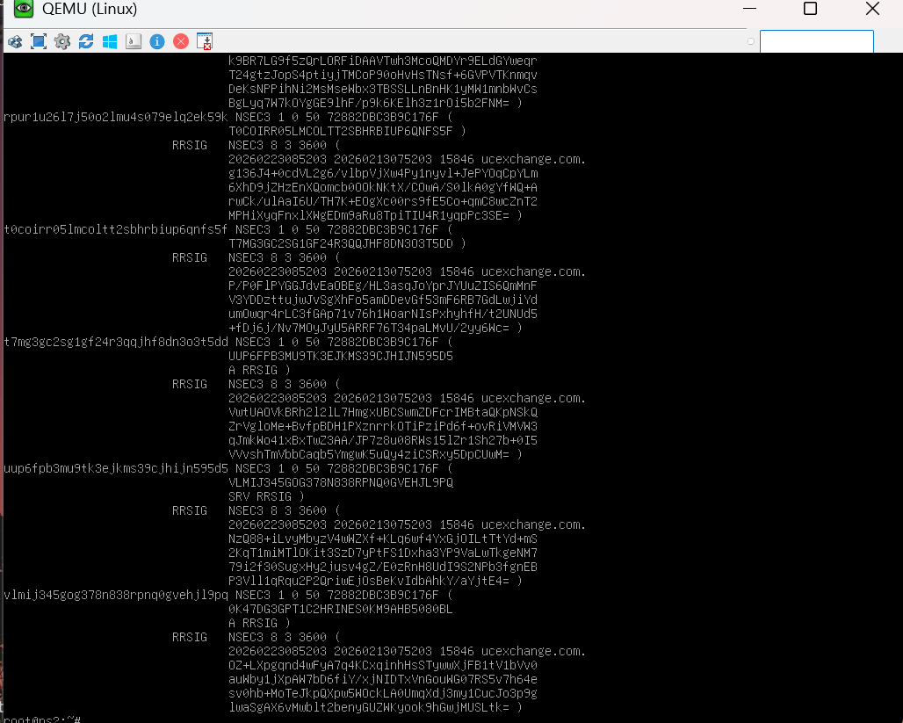
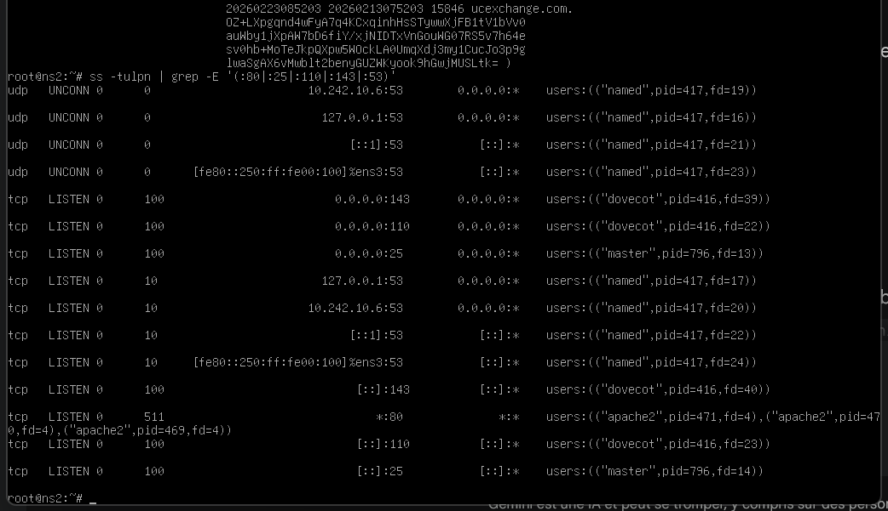
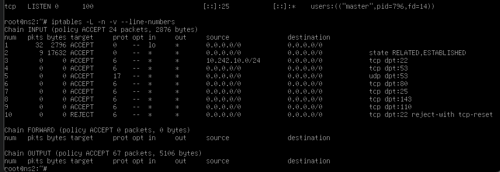
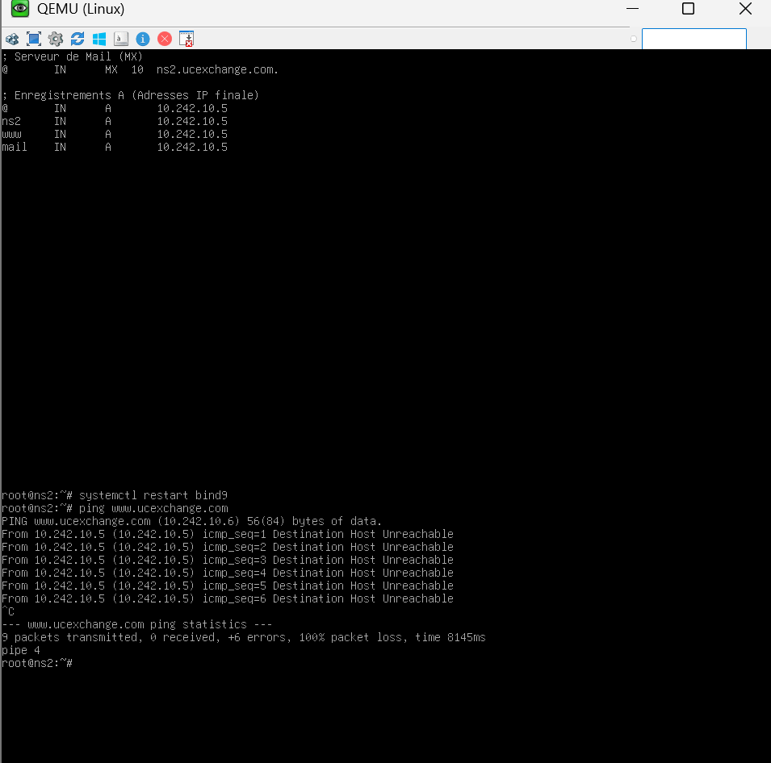
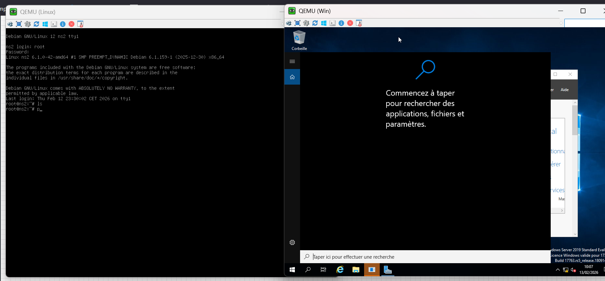
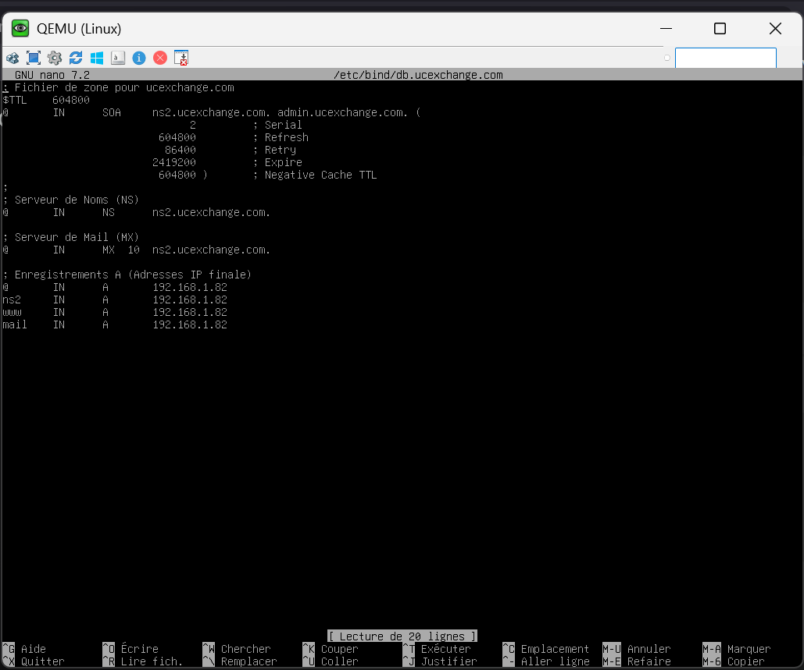

01 Contexte
Pourquoi
Rendre opérationnelles les infrastructures de deux entreprises e-commerce et garantir la continuité de service.
Qui
SAÉ menée en groupe de 3. Ma responsabilité : la mise en œuvre des services réseau.
Quoi
Un LAN commuté hiérarchique, adressé, redondé, et la pile de services : DNS, Web, mail, annuaire.
Où
Maquette virtualisée sous EVE-NG et serveurs Linux/Windows Server, à l'IUT de Colmar.
Quand
Semestre 3 — SAÉ « Concevoir un réseau informatique multi-sites ».
Comment
Découpage en VLAN par service, MST, routage inter-VLAN, VRRP pour la haute disponibilité, PAT vers l'extérieur.
02 Actions, traces & preuves
Sur la partie qui m'a été confiée, j'ai mis en œuvre l'ensemble des services réseau de l'entreprise, en ligne de commande uniquement (l'absence de gestionnaire graphique faisait partie du cahier des charges) :
Côté architecture LAN (travail collectif)
- Conception d'une architecture commutée hiérarchique avec liens redondants, pensée pour rester disponible en cas de panne matérielle.
- Création des VLAN par service respectant le plan d'adressage global, activation de MST (Multiple Spanning Tree) et du routage inter-VLAN.
- Haute disponibilité via VRRP (mode actif/passif) et sortie vers l'extérieur en NAT/PAT.
Côté services réseau (ma partie)
- DNS : serveur primaire sous Windows Server 2019 et secondaire sous Linux, transfert de zone chiffré avec DNSSEC, filtrage pour n'autoriser que le trafic DNS sur le serveur.
- Web : serveur Apache hébergeant deux sites (un intranet réservé aux clients, un public), avec ouverture maîtrisée du trafic HTTP.
- Mail : service SMTP + IMAP, comptes admin et client, testés au protocole en se connectant via Telnet et commandes SMTP.
- Annuaire : déploiement d'Active Directory sur le serveur Windows et validation par l'ajout d'un utilisateur connecté depuis un poste du domaine.
Maquette EVE-NG & rapport de SAÉ
Plan d'adressage argumenté, configurations des équipements clés et captures de tests commentées.
Tests de validation
Vérification du filtrage SSH par masque réseau, du transfert de zone DNSSEC et de la résolution intranet/public.


Captures réelles du labo

/etc/bind/db.ucexchange.com : SOA, NS, MX et enregistrements A pour le domaine ucexchange.com.capture réelle · QEMU/Debian

ss -tulpn : named (DNS:53), dovecot (IMAP:143, POP:110), apache2 (HTTP:80) et master (SMTP:25) actifs sur le serveur.capture réelle


03 SAÉ rattachée
SAÉ — Concevoir un réseau informatique multi-sites
S3 · groupe de 3Deux entreprises (UC Exchange, ABC Conseil) sur Strasbourg, Nancy et Metz. Le projet se décompose en trois parties : administration des LAN, mise en œuvre des services réseau (ma partie), et interconnexion opérateur — cette dernière est détaillée dans la compétence Connecter.
04 Lien avec le référentiel
L'unité d'évaluation n'est pas l'apprentissage critique (AC) lui-même, mais l'indicateur qui permet de valider tout ou partie d'un AC, jusqu'à remonter à la compétence globale.
Composantes essentielles mises en œuvre dans la SAÉ multi-sites
Réflexivité
Quelle difficulté ai-je rencontrée ?
Le travail intégral en ligne de commande, sans interface graphique, m'a d'abord ralenti : une faute de syntaxe dans un fichier de zone DNS faisait échouer tout le service sans message clair. J'ai dû apprendre à lire les journaux et à tester service par service plutôt que de tout lancer d'un coup.
Comment l'ai-je dépassée ?
J'ai adopté une méthode incrémentale : valider chaque brique isolément (DNS, puis Web, puis mail) avant de la connecter aux autres, et tester au protocole — par exemple parler en SMTP via Telnet pour vérifier le mail sans dépendre d'un client. Cette discipline du « petit pas vérifié » a transformé ma façon de déboguer.
Qu'ai-je proposé ou décidé ?
Pour le transfert de zone, j'ai mis en place DNSSEC afin de chiffrer les échanges entre primaire et secondaire, et un filtrage qui n'autorise le SSH que depuis les machines du même masque réseau — en renvoyant un TCP reset aux autres pour brouiller les scans de ports.
En quoi est-ce généralisable ?
Concevoir des services avec le moindre privilège (n'ouvrir que le trafic nécessaire), valider de façon incrémentale et chiffrer les échanges internes sont des réflexes que je réutilise sur n'importe quelle infrastructure — c'est exactement ce que j'irai appliquer pendant mon stage d'administrateur réseau.